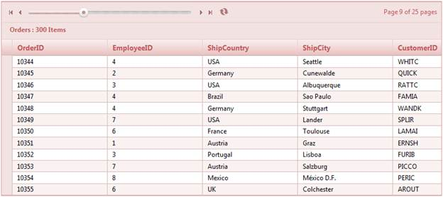

1. Create a model in the application (Refer to Getting Started>Adding a Model to the Application).
2. Add the following code in the Index.aspx file to create the Grid control in the view.
|
View [ASPX] <%= Html.Grid<Order>("OrderGrid", col=> { col.Add(c => c.OrderID); col.Add(c => c.EmployeeID); col.Add(c => c.ShipCountry); col.Add(c => c.ShipCity ); col.Add(c => c.CustomerID); }%> |
|
View [cshtml] @(new HtmlString(Html.Grid<Order>("OrderGrid", col=> { col.Add(c => c.OrderID); col.Add(c => c.EmployeeID); col.Add(c => c.ShipCountry); col.Add(c => c.ShipCity ); col.Add(c => c.CustomerID); }).ToString() )) |
3. Create a GridPropertiesModel in the Index method. Use the AllowGrouping property to enable the grouping feature.
|
Controller public ActionResult Index() { GridPropertiesModel<Order> gridModel = new GridPropertiesModel<Order>() { DataSource = new NorthwindDataContext().Orders, Caption = "Orders", AutoFormat = Skins.Sandune }; gridModel.PageSetting.AllowPaging = true; gridModel.PageSetting.PagerStyle = PagerStyle.Slider; gridModel.PageSetting.PagerPosition = Position.TopLeft; gridModel.PageSetting.ShowPagerInformation = true; ViewData["OrderGrid"] = gridModel; return View(); } |
4. Run the application. The grid will appear as shown in the following screenshot.

Figure 110: Grid with Slider Pager
Properties
|
Property |
Description |
Type of property |
Value it accepts |
Any other dependencies/sub-properties associated |
|
PagerStyle |
Gets or sets the pager style for the grid. The default value is Default. |
Enum |
PagerStyle.Default
PagerStyle.Advanced
PagerStyle.DefaultAndAdvanced
PagerStyle.DefaultAndManual
PagerStyle.Manual
PagerStyle.Numeric
PagerStyle.PrevAndNext
PagerStyle.PrevNextAndAdvanced
PagerStyle.PrevNextAndManual
PagerStyle.Slider
PagerStyle.SliderAndAdvanced
PagerStyle.SliderAndManual
|
NA |
|
PagerPosition |
Gets or sets the position of the pager. The default value is BottomLeft. |
Enum |
Position.BottomLeft Position.BottomRight Position.TopLeft Position.TopRight |
NA |
|
SliderWidth |
Gets or sets the slider width when PagerStyle is set to Slider, SliderAndManual, and SliderAnd Advanced. |
double |
double |
PagerStyle |
|
TextboxWidth
|
Gets or sets the text box width when PagerStyle is set to Manual, Advanced, DefaultAndManual, DefaultAndAdvanced, PrevNextAndManual, PrevNextAndAdvanced, SliderAndManual, and SliderAnd Advanced. |
double |
double |
PagerStyle |
|
ShowPagerInformation |
Gets or sets the pager information to display or not. |
bool |
True/False |
NA |
Sample Link
To access the sample:
1. Go to the ASP.NET MVC demos in the sample browser. Refer to the Sample and Location chapter.
2. Select the Grid icon at the bottom-left of the browser.
3. Select the Paging option in the scrollable menu.
4. Select the Pager Types item to view the full pager customization demo.